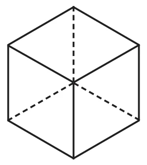
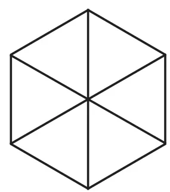
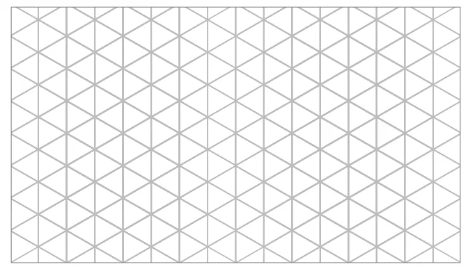
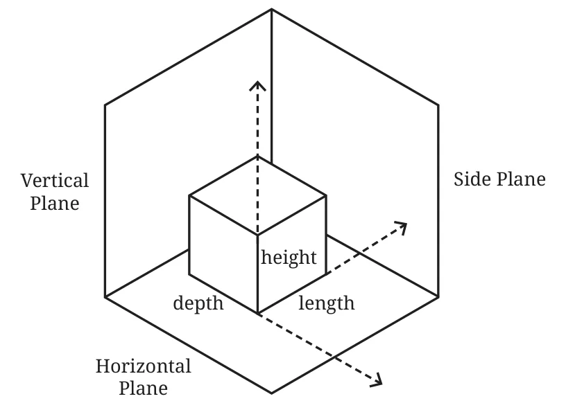

In general we lose information when projecting a solid to a plane. But depending on the orientation of the solid, we can sometimes recover much of the information we’ve lost.
Let us consider an orientation of a cube in which the lengths of the projections of all the edges of the cube are equal. Such a projection is called the isometric projection of the cube. ‘Isometric’ means ‘equal measure’ in Greek.
Imagine balancing a cube perfectly on one of its corner vertices, and then projecting it down to the floor plane. This projection is isometric and appears as shown.

Construct a model of a cube and use your hands to keep it balanced on one corner vertex. Can you try to understand why all the projected edges have equal length?

The isometric representation of a cube is a regular hexagon. If the cube is made of glass, then all the edges would be visible.
This structure is the basis for isometric drawing! Tile the plane with hexagons and we get an isometric grid.

Isometric grids are widely used in engineering. They make it easy to draw projections of solids and to measure lengths along all the 3 primary directions — length, depth and height, as shown in Fig. 4.7.
